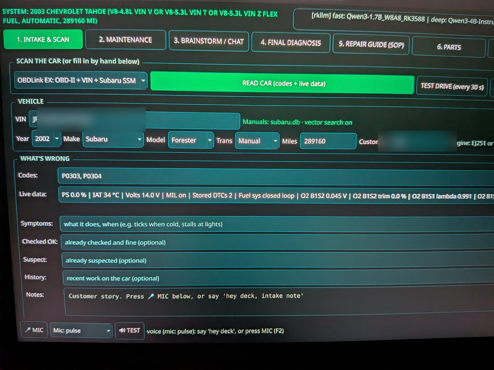
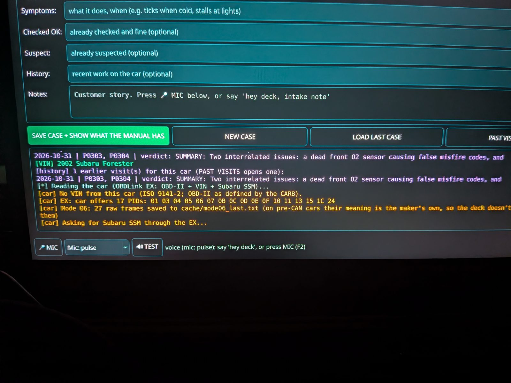
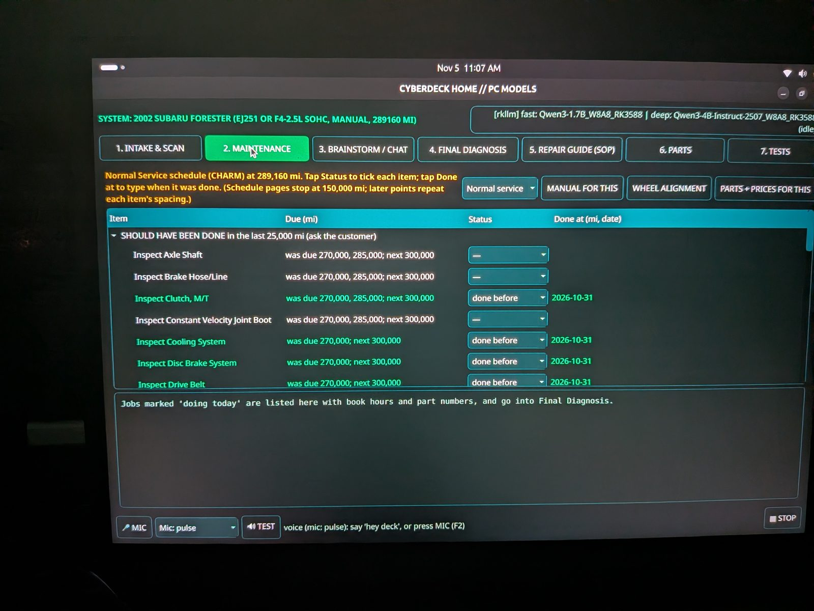
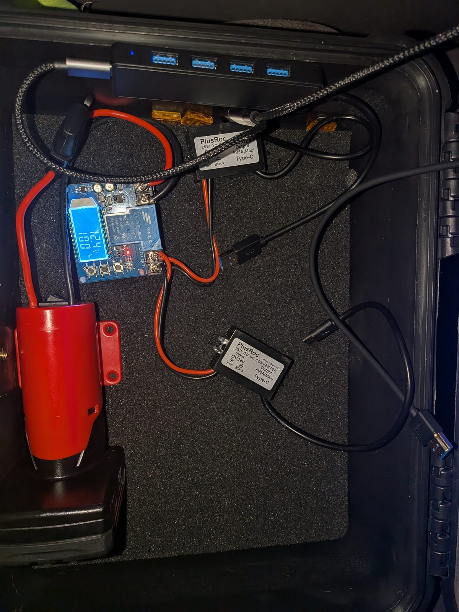
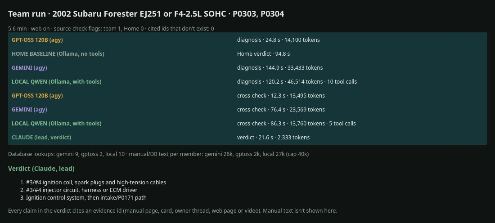
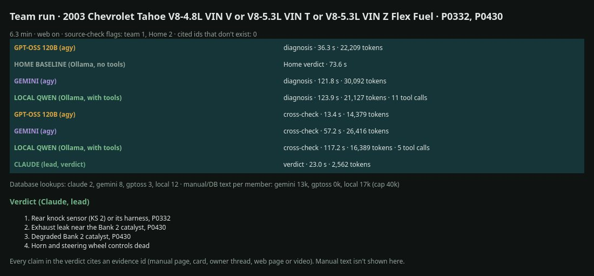
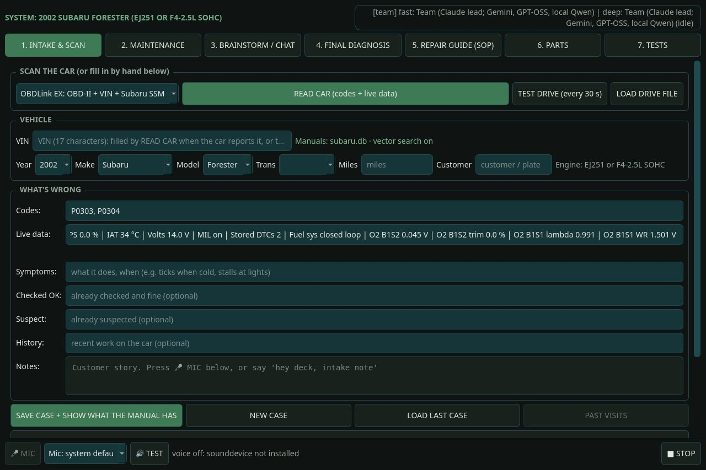

Open Diagnostic Cyberdeck
An offline car diagnostic deck on an Orange Pi 5 that walks the factory service manual and cites every source.


| Board | Orange Pi 5, models on the RK3588 NPU |
|---|---|
| Models | Qwen3 1.7B and 4B, offline; hands off to a bigger PC over Tailscale when one is reachable |
| Knowledge | One SQLite database per make, builders for 50+ makes |
| Test cars | 2002 Subaru Forester, 2003 Chevy Tahoe |
What hooked me
Code readers give you a code and a one-line definition. The factory diagnostic chart is where the real answer is, and nobody has time to page through it in a driveway.
What I've learned
- Keep the model's job small. Python does the exact math, the model only explains.
- Empty beats wrong. A missing torque spec costs a lookup; a wrong one costs a stripped bolt.
- Small models (Qwen3 1.7B and 4B) on the RK3588 NPU are enough when retrieval does the heavy lifting.
On the cars








Team mode
The deck already runs on local models: Qwen on the Orange Pi's NPU, or two bigger Qwen models streaming from my PC. Team mode is a separate app with the same screens that hands every question to a team instead: Gemini and GPT-OSS (through Google's Antigravity CLI) and my local Qwen each work the case with read-only lookups into my manual databases. They check each other's work, then Claude writes the final call. Every claim cites its source, and the deck logs every lookup. On my Forester and a friend's Tahoe it beat the local models.





